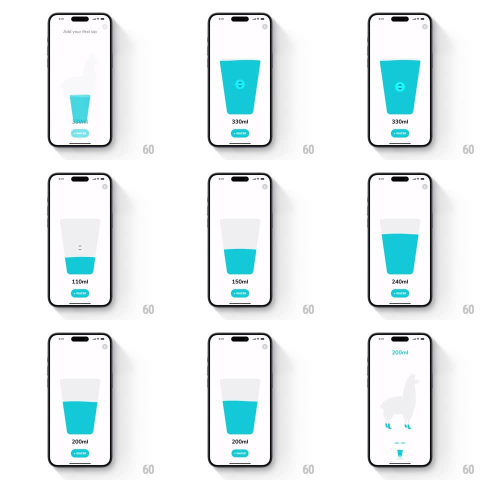

Media
Frame-by-frame

Rebuild this interaction 1:1: Waterllama's first-sip slider - drag vertically inside the glass and the water level follows with a live wave surface, then the glass morphs into the home progress tracker.

Rebuild this interaction 1:1: Waterllama's first-sip slider - drag vertically inside the glass and the water level follows with a live wave surface, then the glass morphs into the home progress tracker.
## Integration
Integration: stack-agnostic spec - springs given as stiffness/damping, timed motions as duration + curve; map every value to your framework and animation library of choice.
## Scene
Onboarding ("Add your first sip", gray llama silhouette, teal drop) gives way to a large tapered glass with teal water, a circular up/down drag handle floating on the surface, the amount beneath ("330ml"), and a teal "+ WATER" pill.
## Motion spec
Pattern: liquid-level slider with wave physics.
- Vertical drag on the glass: the water surface tracks the finger 1:1 (clamped to the glass), the amount label updating live (count tween under 100ms); the handle rides the surface.
- The surface is alive while dragging: a traveling wave ripples across it (amplitude 3-8px, wavelength ~1/3 glass width, speed tied to drag velocity) and sloshes on release (tilts +-5deg, spring ~280/14, 700ms settle).
- The fill edges hug the glass taper exactly; a soft inner shadow at the surface line gives the water depth.
- Haptics tick lightly at each 10ml; a medium tick at snap points (common pours: 50/100/200/250/330).
- + WATER: pill presses (scale 0.95, 100ms), the glass scales down and flies toward the llama screen (bounds spring ~340/22), morphing into the tiny progress glass beside the llama as the total ("200ml") fades in above - the slider literally becomes the tracker.
## Calibration
- The wave is a surface effect only; volume math stays linear with height along the taper.
- Drag works anywhere on the glass, not just the handle.
## Reduced motion
Flat surface, no slosh; morph becomes a crossfade.
## Don't miss
- The handle is a subtle circle with up/down arrows sitting ON the water line - it never detaches from the surface.
- The morph destination is the home screen's llama + mini glass; the pour you just made is the fill it lands with.